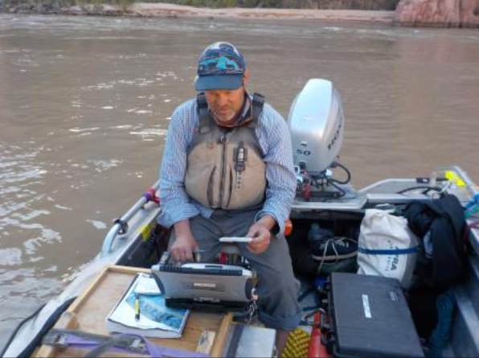
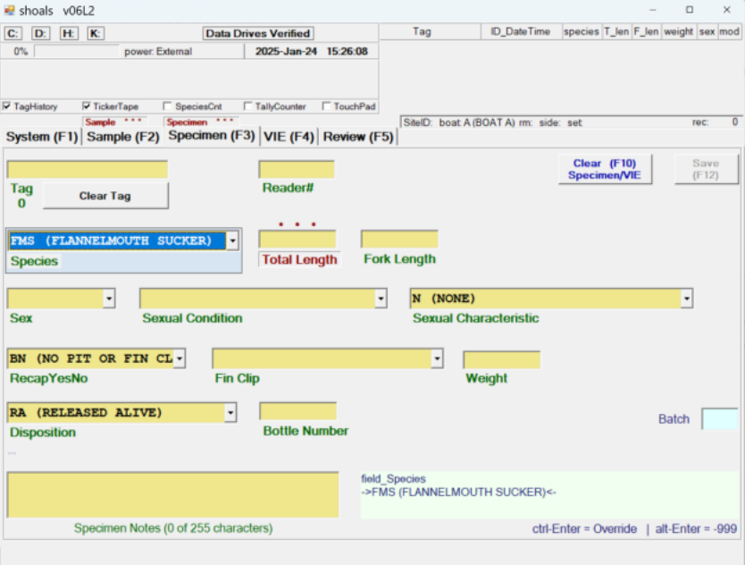
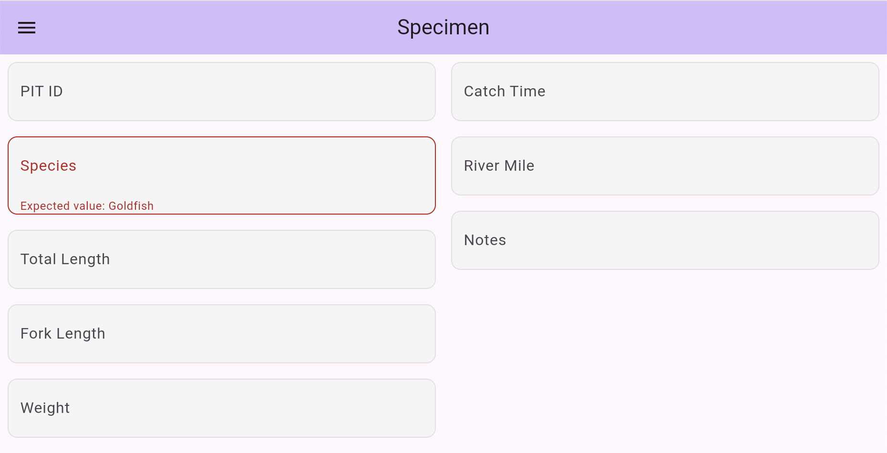

Project
Project Description
Fish Monitoring in the Grand Canyon
The Arizona Game and Fish Department, U.S. Geological Survey, and U.S. Fish and Wildlife Service conduct and support fish monitoring throughout the Colorado River and Grand Canyon. Fish populations can provide important information about changes in the river and help guide conservation efforts. Biologists record data from roughly 150,000–200,000 fish each year, including species, size, location, and population information. Many fish are also given PIT tags, which provide each tagged fish with a unique 13-digit ID that can be scanned if the fish is captured again.
For Arizona Game and Fish, monitoring includes 82 sites along the river, with the river divided into 250-meter sections. Information collected during these trips is eventually added to a larger database where it can be shared and used for continued monitoring and research.

The Current Problem
Field crews currently use a program called Shoals to record sampling and fish data. Shoals was developed more than a decade ago in Visual Basic, and the original developer has been retired for several years. The program has not received regular updates or improvements, leaving biologists dependent on an aging system for an important part of their field work.
A replacement is especially important because field data entry is now a major part of the monitoring workflow. Biologists need to scan tags, enter measurements, review previous records, and back up their data while working in the field. Continuing to rely on software that is no longer actively maintained makes it harder to improve that workflow or adapt it as equipment and technology change.

CRAB CAKES
CRAB CAKES, or the Colorado River Area Biologists Computer-Aided Knowledge Entry System, is the desktop application being developed to replace Shoals. Development began with a previous NAU Capstone team, SharkBytes, which created the first version of the new system and completed several important parts of the application. However, the program is not yet reliable enough for regular field use.
PIT Crew is continuing that work by focusing on the parts of the program that still need improvement. These include making Bluetooth connections with PIT-tag scanners more reliable, improving the interface, and adding access to information about previously tagged fish. The project also includes adding simple graphs and summaries for QA/QC in the field and expanding compatibility to Linux so the program can be used on a wider range of computers.

Why It Matters
Fish surveys involve collecting a lot of information while fish are being handled in the field. Tag numbers, species, measurements, locations, and other sample information all need to be recorded correctly before the data is eventually added to the larger research database. Better checks during data entry can help catch unusual values and mistakes while the crew still has the fish and the original information in front of them.
The software also needs to work well for people with different levels of technical experience. Connecting a scanner, entering a fish, reviewing its history, and checking the day's data should be easy to understand without requiring programming knowledge. A reliable replacement for Shoals would make data easier to collect, review, and understand while giving biologists a system that can continue to be updated as their field work changes.